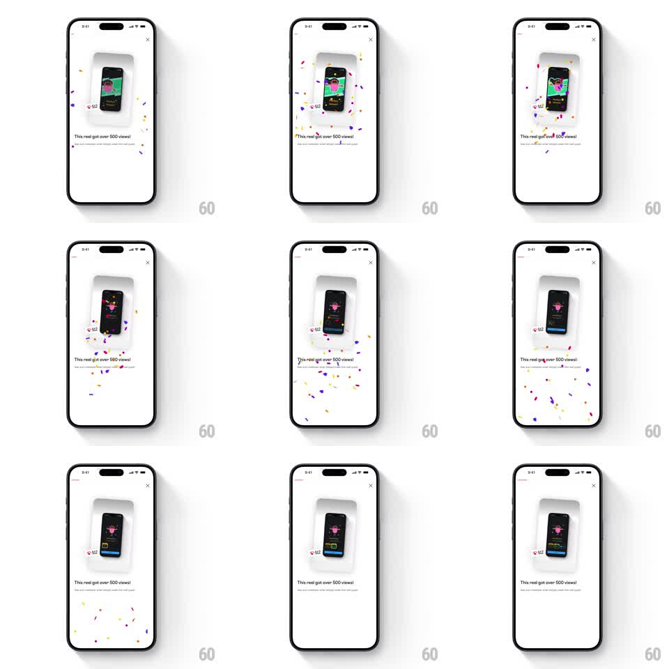

Media
Frame-by-frame

Rebuild this animation 1:1: Instagram's reel-milestone celebration - a frosted preview card of the reel pops in, confetti bursts outward from it, and the "This reel got over 500 views!" line lands with a progress bar.

Rebuild this animation 1:1: Instagram's reel-milestone celebration - a frosted preview card of the reel pops in, confetti bursts outward from it, and the "This reel got over 500 views!" line lands with a progress bar. ## Integration Integration: stack-agnostic spec - springs given as stiffness/damping, timed motions as duration + curve; map every value to your framework and animation library of choice. ## Scene Instagram celebration modal, white: an X close button, a frosted-glass rounded card holding a phone-sized reel preview (with a small views chip), the headline "This reel got over 500 views!", a thin progress bar, and subcopy. Confetti: small rectangles and dots in pink, orange, purple, yellow. ## Motion spec Pattern: confetti burst erupting from the reel preview card. - The frosted card scales in from 0.7 -> 1 (spring ~320/14, one overshoot) as the reel preview fades in inside it (200ms). - At the card's landing moment, confetti erupts from the card's center: ~40 pieces with radial velocities (fast center-out, 500-900px/s), gravity pulling them down, each tumbling (random rotation 2-6 turns/s) and fluttering (sinusoidal x-wobble, +/-10px). - Pieces fall past the headline and fade out over their last 20% of life (~1.8s total each, staggered launch over 150ms). - The headline fades up under the card (translateY 8 -> 0, 250ms) at burst time; the progress bar fills 0 -> 100% over 600ms with a slight ease-out, then the subcopy fades in (200ms). - A second smaller puff (~12 pieces) fires from the card 700ms after the main burst - an echo. ## Calibration - Confetti renders above the card but below the headline text - layered depth. - Piece shapes: 60% small rectangles (3x6px), 40% dots (3px); no two adjacent pieces share a color. ## Reduced motion Card fades in (250ms); a single static confetti arrangement fades in and out once. ## Don't miss - The burst origin is the card's center, not the top of the screen - confetti reads as erupting from the reel. - The frosted card keeps its blur/glass look over the white background throughout.